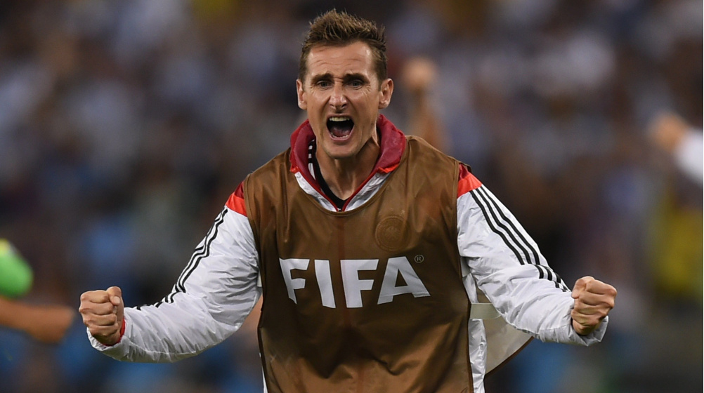

A Copa do Mundo é uma competição internacional organizada pela Federação
Internacional de Futebol a cada quatro anos. A Copa do Mundo é um dos
maiores eventos esportivos do planeta e, a cada quadriênio, bilhões de
pessoas assistem aos jogos realizados.
Como surgiu a copa?

A primeira Copa do Mundo aconteceu em 1930, após muitos anos de tentativas de se organizar uma competição mundial de futebol. O início do evento está diretamente ligado ao surgimento da Fifa e sua atuação na popularização e profissionalização do futebol. A Federação foi fundada em 1904 e contou com a adesão inicial das seguintes nações: Bélgica, Dinamarca, França, Holanda, Espanha, Suécia e Suíça.
Os primeiros esforços na direção de se organizar uma competição como a Copa do Mundo foram realizados por um dos idealizadores da Fifa, o holandês Carl Anton Wilhelm Hirschman. Contudo, o grande responsável pela realização da primeira Copa do Mundo foi Jules Rimet, presidente da Fifa durante mais de trinta anos.
Os esforços de Jules Rimet concentraram-se na década de 1920, principalmente após o sucesso da competição de futebol realizada nos Jogos Olímpicos de 1924 e 1928 – ambos vencidos pelo Uruguai. A partir daí, as negociações pela realização de uma competição de futebol desvinculada do Comitê Olímpico Internacional (COI) intensificaram-se.
A reunião final que levou à decisão de organizar o primeiro Mundial saiu em 1928, em Amsterdã, na Holanda. Posteriormente, tal resolução foi ratificada em reunião em Zurique. Nesses encontros estabeleceu-se o básico de uma Copa do Mundo: o evento seria realizado a cada quatro anos, inicialmente com um troféu produzido e oferecido pela própria Fifa, seria aberto a nações de todos os continentes e, se necessário, haveria eliminatórias para determinar os participantes.
A definição da sede, no entanto, só aconteceu em 1929 e foi um assunto que resultou em acalorados debates. Para sediar a Copa de 1930, houve a candidatura das seguintes nações: Hungria, Itália, Holanda, Espanha, Suécia e Uruguai. A escolha pelo Uruguai como sede do Mundial foi determinada em um congresso realizado em Barcelona.
A decisão é atribuída a múltiplos fatores. Desportivamente falando, ele representava a maior potência futebolística e já era bicampeão olímpico à época. Quanto a questões financeiras, havia o fato de que o Uruguai se comprometeu a pagar as despesas de todos os participantes e a construir um novo estádio para a competição. A primeira Copa do Mundo contou com treze participantes:
Europa: Bélgica, Romênia, Iugoslávia e França
América do Norte: EUA e México
América do Sul: Argentina, Bolívia, Brasil, Chile, Paraguai, Peru e Uruguai"
Crescimento da copa
Com o passar dos anos e a popularização do futebol, a Copa do Mundo tornou-se um evento
grandioso e que mobiliza uma quantidade de dinheiro gigantesca.
A relevância da competição refletiu-se na quantidade de nações que participavam do evento.
Nas edições de 1934, 1938 e 1950, foram 16, 15 e 13 nações, respectivamente.
Já nos anos 1954 e 1978, a competição contou com 16 participantes. Entre 1982 e 1994, o
número foi ampliado para 24 seleções. O modelo que existe atualmente (32 seleções) foi
utilizado pela primeira vez na Copa de 1998 e permanecerá até 2022. A partir da Copa de 2026, a competição contará com 48 participantes.